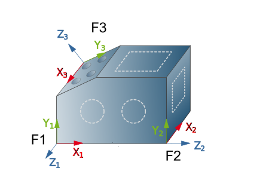
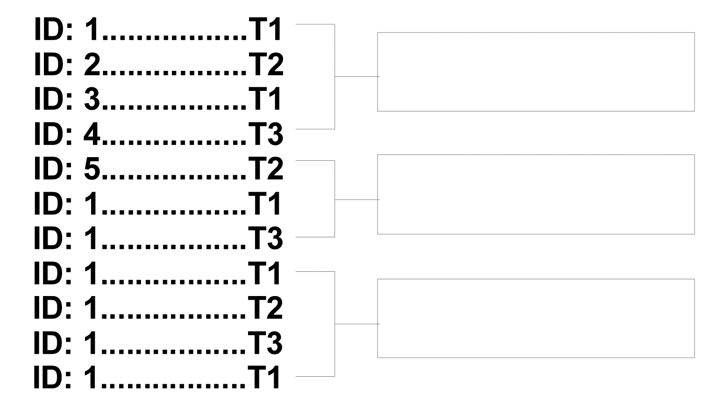
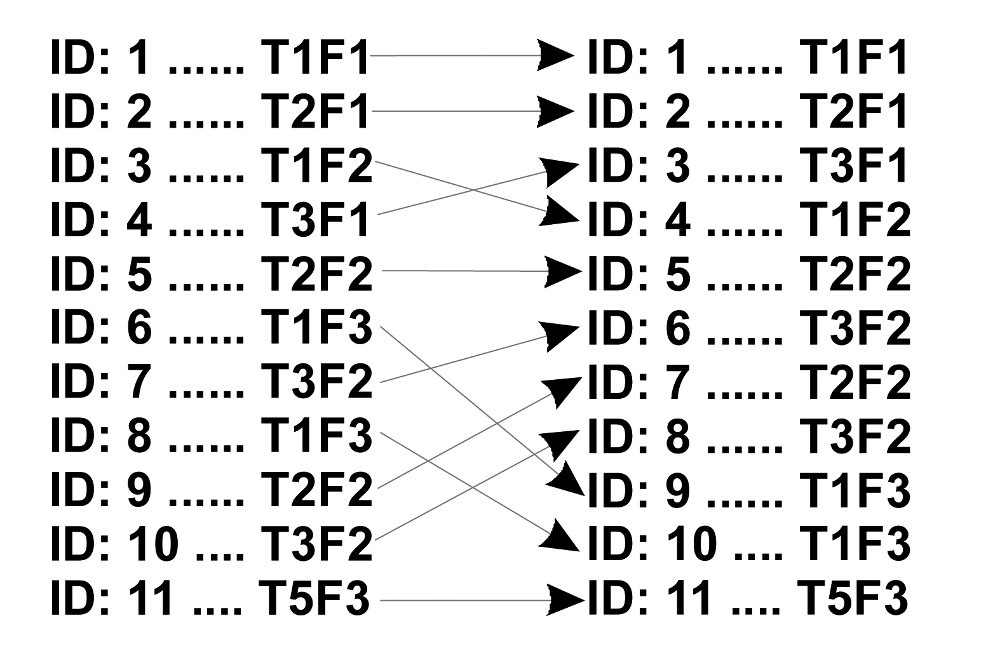

Multi axis indexing
Prerequisites for multi axis indexing:
-
A machine with C axis and/or swiveling milling head (5X machining).
-
A drawing in the form of a 3D model.
Programming always takes place in the G17 workplane:
-
Infeed in (negative) Z direction; Z axis is perpendicular to the machining side
-
Machining in the XY direction.
Hence in multi-axis machining, you first have to define the coordinate system and the frame for each machining side. See the information in section NC system and frames.
|  |
Machine cycle definition
The job sequence is basically arbitrary. If a tool change optimization is required, the definition should be made one page at a time (shorter calculation time).
|  |
To do this, open the machining cycle, set the required frame in the Setup input dialog and define the job's machining parameters.
At any given time, only the current frame is visible in the CAD drawing. Only those contours that lie on the frame's XY plane can be selected.
Tool change optimization
Before generating the toolpaths, it is possible to optimize tool changes by sorting individual jobs according to different criteria.
Macro job lists for holes must be expanded into individual jobs prior to tool change optimization. Use the Explode function on the shortcut menu for this.
It is possible to sort by different criteria. Use the function you require from the joblist’s shortcut menu.
Sort by tool: Starting with the first tool in the expanded joblist (drilling cycles expanded into individual drillings), the jobs are sorted by tool number in ascending order, regardless of the frame in the job. The job sequence can also be sorted again manually.
 |
Sort by frame: The jobs are sorted by frame number. The job and tool sequence already defined for each frame is retained.
|  |